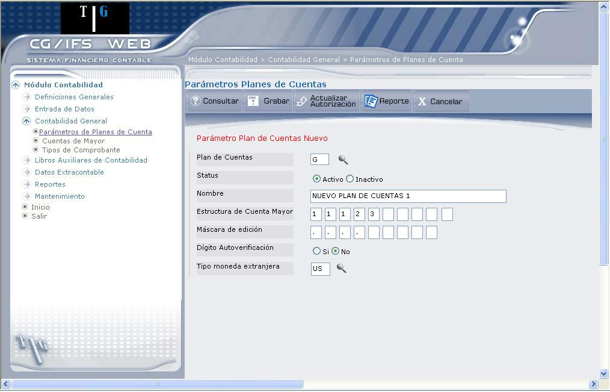

Nuevo Plan de Cuentas
Para crear un nuevo Plan de Cuentas, digite el código del Plan de Cuentas que va a crear, y presione la tecla ENTER, inmediatamente se desplegará la pantalla que muestra 1.5, para el ingreso de parámetros.
Al digitar un Plan de Cuentas que no existe y presionar el botón Consultar, el sistema busca el Plan de Cuentas, si no lo encuentra asume que se trata de un nuevo Plan y despliega la pantalla que muestra 1.5, para el ingreso de los parámetros.

Figura 1. Parámetros de Planes de Cuenta – Nuevo Plan de Cuentas.
Status:
Despliega los dos posibles estados que puede tener el Plan de Cuentas (Activo o Inactivo). Al momento de crear un nuevo Plan, automáticamente se marca el casillero Activo.
Nombre:
Digite el nombre del nuevo Plan.
Estructura de Cuenta Mayor:
Digite un máximo de 9 dígitos, teniendo en cuenta que la suma de todos ellos no puede exceder de 15. El contenido de cada elemento es el número de caracteres con que cuenta cada subdivisión de de Mayor (longitud del nivel). La posición relativa dentro del conjunto indica el número del nivel. Por ejemplo, la estructura ´2 3 2 2´ representa un código contable de la forma ´XX XXX XX XX´.
Máscara de Edición:
Indica el caracter que separa cada nivel. Digite un máximo de 9 elementos (* / , . -). Cada elemento indica el caracter de separación entre cada nivel.
Por ejemplo, si se digita ´-´, se tendría el siguiente formato: ´XX-XXX-XX-XX´. Este formato es el que aparece en consultas y listados, para una mejor interpretación del código de cuenta.
Dígito Autoverificación:
Marque el casillero SI o NO según se desee o no que en la utilización de las Cuentas de Mayor se verifique el código introducido mediante el dígito de chequeo, que es el último a la derecha. Usar este dígito obliga a dar de alta las Cuentas de Mayor de detalle al máximo nivel.
Tipo moneda extranjera: (opcional)
Seleccione el tipo de moneda que desea que todas las cuentas del Plan utilicen (contabilidad paralela en dos monedas). El tipo de moneda debe definirse previamente en la opción Monedas que se explica en el punto 4.1.6.
Una vez registrada toda esta información, presione el botón Grabar, que despliega un mensaje de confirmación de la grabación.
Created with the Personal Edition of HelpNDoc: Qt Help documentation made easy